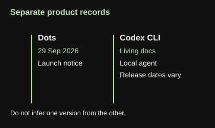
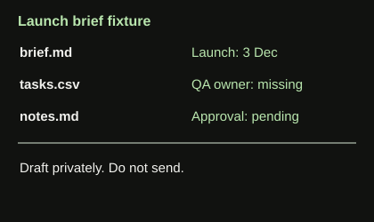
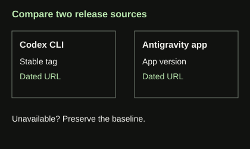
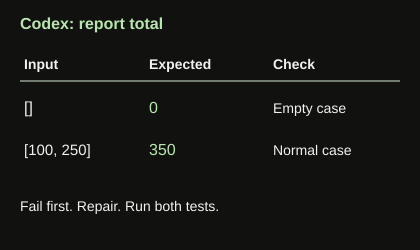
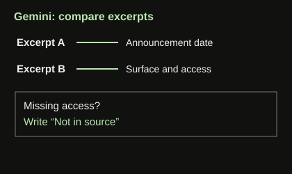
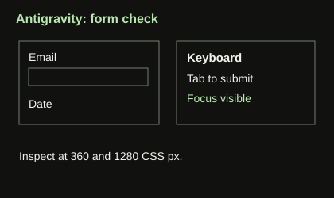
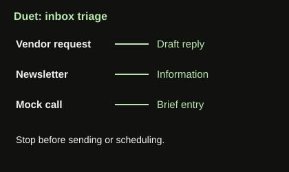

Product and version index
Match the product, interface, model and access tier before you try a tutorial.
On this page
Product identity and access
Use the product name, client version, model, and access tier as four separate fields. This register covers public evidence through November 20, 2026. A rollout statement does not establish access for a particular account.


| Name in brief | Verified identity and role | Release, version and access | Exercise |
|---|---|---|---|
| Grokbot | Grok Bot, SpaceXSI's AI teammate with a cloud computer, connected apps and ongoing tasks. Grok Chat, Grok Build and the Grok model are separate names. [P01] [P02] | Beta launched August 11. Grok Bot 1.0 launched November 11. The 1.0 notice identifies Team and Enterprise plans for Team Bots. Meetings add Ultra access. The X Subscription also bundles Grok Bot. Confirm your entitlement in the client. [P57] [P01] [P02] | Launch brief |
| Dots | Dots in ChatGPT, OpenAI's persistent personal agents. A dot has its own cloud computer and takes on ongoing work. [P03] [P04] | OpenAI announced dots September 29. Personal access covers Pro and selected Plus users aged 18 or older outside the EEA, Switzerland and the UK. Eligible Business Premium access is gradual, and eligible US Business Standard access is gradual. [P53] Eligible Enterprise, Edu and Healthcare workspaces default to available from November 18, subject to admin opt-out. UAE data or inference residency excludes access. [P58] Public dot app version: Not in source. [P03] [P04] [P05] | Recurring source watch |
| Codex | OpenAI Codex, an agent for repository work. CLI, desktop, IDE and cloud workflows have different execution environments. [P06] [P07] | CLI stable rust-v0.171.0 dated November 20 at commit ccf9be8. The 0.173.0 alpha is a pre-release. [P60] GPT-6.2 Astra and Sol launched November 17 across Codex, ChatGPT Work and the API. Work supports Plus, Pro, Business, Enterprise and Edu. Enterprise and Edu admins must enable the models in Work. [P07] [P08] | Repository patch |
| Muse | Muse, Meta's personal AI agent, with mobile, desktop and WhatsApp surfaces. Muse Wonder is a model, Muse Code is a coding product, and Muse Image is an image model. The names identify separate offerings. [P09] [P10] [P11] [P12] [P13] | Muse launched in the US in September on iOS, Android and the web. Meta also documents a Mac app. Its public desktop build is not in source. Apple lists the Muse app for iOS, version 16.2, when checked. [P54] [P55] Wonder and Wonder Full launched October 12 with different access. Meta announced Muse Image July 7. OpenRouter lists August 26 and $0.01 per image for its catalog entry. The dates refer to different distribution surfaces. [P09] [P11] [P12] [P13] | Personal planning · Image draft |
| Gemini | Gemini, Google's assistant app and the name of a model family. AI Studio and Gemini API are developer surfaces. [P14] [P15] | Gemini 4 Argon arrived in the Gemini app in October. Google began the Gemini 4 Neon rollout November 18. Consumer Google AI Pro and Ultra subscribers can select it in the Gemini app. Enterprise and developer access use their own surfaces. Check rollout in your account. [P14] [P15] | Source comparison |
| Antigravity | Google Antigravity, a development platform with a standalone agent app, CLI, IDE, extensions and SDK. The 2.0 agent app is a separate application from the IDE. [P16] [P17] | 2.0 app announced May 19. App 2.33.0 dated November 17. CLI 1.5.12 and IDE 2.8.0 dated November 19. Neon rollout began November 18 for AI Pro, AI Ultra and Gemini Enterprise. [P16] [P17] [P18] | Interface review |
| Claude | Claude, Anthropic's assistant and model family. Cowork capabilities are part of the unified Claude experience. Claude Code is a separate coding surface. [P56] [P19] [P20] [P21] | Sonnet 5.5 is a documented model. Fable 5.2 and Mythos 5.2 launched November 9. Mythos 5.2 has limited access for approved partners. Claude Code 2.1.329 dated November 19. [P19] [P20] [P22] | Memo review · Reproduce and patch |
| Claude Duet | Claude Duet, Anthropic's distinct proactive assistant app for connected work, available on iOS, Android and claude.ai. [P23] [P24] | Research preview opened October 21 by US waitlist for Pro, Max and Ultra. The help article and release notice include Ultra. An invitation is required. Preview shares Claude limits and excludes Team and Enterprise. [P23] [P24] | Inbox brief |
Product exercises
Each exercise is a documented workflow with synthetic inputs. The product steps require your own account. Execution, timing and output quality were not measured. Time boxes and stop rules below are guide estimates.
Grok Bot · Prepare a launch brief
Set up. Open Grok Bot 1.0 from its official download or onboarding page. Create a personal Bot. Give it three synthetic files only. Use a private work area. Team Bot and Meetings access vary by plan. [P02]


Inputs. In brief.md, set launch to December 3. In tasks.csv, set QA due December 2 with no owner. In notes.md, mark approval pending.
Read these three files. Draft a launch brief with a date, owner, status
and source for each item. Mark a missing owner as Not in source.
List facts, conflicts and decisions separately. Keep the result private.
Stop before any send, schedule or shared change.Check and recover. Verify the launch date, missing QA owner and pending approval by hand. Remove any unsupported assignment. If a connection fails, rerun with files attached directly. Keep the original inputs and compare the two briefs.
Budget and extension. Set aside 15 minutes. Confirm Bot usage in your account before a repeat run. After one correct pass, test a second dated file and check that the brief preserves both dates.
Dots · Check two public sources
Set up. Open dots in the ChatGPT mobile app, desktop app or a desktop browser. Create a personal dot if the account permits it. Start with two public URLs and two saved page excerpts. Leave connectors off for this exercise. [P04]


Inputs. Save a dated excerpt from the Codex CLI releases and an Antigravity app changelog excerpt. Keep the two stable version strings and URLs in a small baseline table.
Compare the public Codex CLI release page and Antigravity App changelog
with this baseline. Report stable version changes and dated source links.
Keep alpha releases in a separate note. If either source is unavailable,
mark it unavailable and preserve the baseline. Return a draft in this chat.Check and recover. Reopen each cited page. Confirm that the Antigravity app version did not come from its IDE section. Compare the stable Codex tag to the release label. If dots is absent, keep the same fixture for a manual chat exercise.
Budget and extension. Set aside 15 minutes. Check personal limits or the Enterprise agreement before you add a schedule. OpenAI’s onboarding article states that the Enterprise dot itself has no fee through January 13, 2027. It announces billing for all enabled dots from January 14, 2027. Separate Work and Codex threads still use existing allowances or rates. Verify the terms for your workspace. [P05] After a one-time pass, use an authorized recurrence and test one expected no-change result. [P05]
Codex · Fix a report total in a local repository
Set up. Open the CLI or desktop client from the official instructions. Sign in. Record the client version and the selected model. Choose GPT-6.2 Sol in the desktop model picker or with /model in the CLI if the account offers it. In Work, open Advanced if the Power slider appears. Select the model and reasoning effort there. Work in a disposable local project. [P06] [P07] [P08]


Inputs. Create a small Python report function that sums invoice cents. Make its empty input return None. Add a fixture with [] and [100, 250]. Write the expected results as 0 and 350.
Inspect the report function and its tests. First show a command that
reproduces the empty-input defect. Then fix the smallest relevant function.
Run the targeted tests and the full test suite. Report exact commands, exit
status and changed files. Keep the work local. Stop before any push.Check and recover. Confirm the initial failure, then require both expected results. Review git diff and the test output. If the test runner is absent, record the error. Use Python's standard test runner if the project already uses it.
Budget and extension. Time-box to 25 minutes and one focused repair pass. Record wall time and account usage. Codex shares usage with Work. API billing is separate. [P08] Add a repo skill once the prompt gives a repeatable result.
Muse · Reconcile a synthetic schedule
Set up. Open Muse for Mac from the official product page or use the web. Sign in only with an account authorized for Meta use. Record the desktop version shown in the app if available. Use the sample below with a desktop text file for the local rehearsal. The provider exercise is documented and was not run. No personal data is required. [P09] [P10]
Inputs. List a room booking from 10:00 to 11:00 and a mock call from 10:30 to 10:45. Assign all times to UTC. Supply no organizer for the call.
Draft a schedule for this synthetic day. Keep each original time and zone.
Flag overlap from the supplied entries. Mark missing organizer as Not in source.
Show one proposed change and the decision needed. Keep this as a private draft.Check and recover. Confirm one overlap and an unknown organizer. If you cannot access Muse or have no approval for Meta, use a local fixture and inspect a hand-written schedule.
Budget and extension. Allocate 10 minutes. The launch source describes free and paid access. Verify current entitlement before a repeat or connector exercise. Add one synthetic timezone conversion after the original pass. [P09]
Muse Image · Draft an abstract subject image
Set up. Treat meta/muse-image as an OpenRouter model route. The route lists Meta as the provider. Use this procedure only with explicit approval for Meta processing. Handle the sample as a text brief when such approval is absent. [P12] [P13]
Inputs. Use a synthetic subject and no reference files. The brief is for a neutral image in a fictional field notebook.
Create a single top-down image of a yellow measuring cup on a white table.
Use diffuse daylight and a plain background. Keep the cup centered.
Do not add text, marks, logos or any other objects.Check and recover. Inspect the cup count, background, marks and crop. Compare the output to the text brief. Revise one constraint if needed. Keep exact data, diagrams and typography in a separate layout file.
Budget and extension. Two images cost $0.02 at the listed image rate before other charges or taxes. Time-box review to 10 minutes. A second permitted run can test one controlled edit with a synthetic reference. [P13]
Gemini · Compare two source excerpts
Set up. Open the Gemini app. Select Gemini 4 Neon if your Google AI Pro or Ultra account offers it. Record the model shown. Attach two public excerpts from the Gemini 4 Argon app announcement and the Gemini 4 Neon model announcement. Record their URLs and publication dates. [P14] [P15]


Make a table with model, announcement date, named surface, access and source.
Use these two excerpts. Mark unstated access as Not in source.
Distinguish confirmed availability, preview and a future rollout.
Quote only a short phrase when it changes the meaning.Check and recover. Check every surface and access statement against its excerpt. Require the November 18 Neon entry to identify consumer Google AI Pro and Ultra access in the Gemini app. If the model picker lacks Neon, record that account observation separately from the announced rollout. Paste excerpts directly if upload fails.
Budget and extension. Allocate 15 minutes. Record plan and selected model. An app subscription and API billing are separate surfaces. Add the Antigravity model announcement as a third source and verify the distinction. [P15] [P18]
Antigravity · Review an interface change
Set up. Open a disposable local project in the Antigravity app. Record client version and model from settings. Choose Neon if the plan offers it. Use a local preview only. [P16] [P17] [P18]


Inputs. Use an HTML form with email and date fields. Place text labels beside the fields and remove the keyboard focus style from the submit button.
Inspect the form at 360 and 1280 CSS pixels. Fix the association between
each label and field. Restore a visible focus indicator. Keep the text
and fields. Show the diff and record the keyboard sequence you checked.
Use the local preview and stop before any deployment.Check and recover. Press Tab through the form. Click each label and check focus. Compare both viewport widths for clipping. If browser access fails, inspect markup and record viewport checks as pending.
Budget and extension. Set a 20-minute time box and one model run. Record usage shown in the account. Add a second review with the same form after the original pass.
Claude · Check a decision memo
Set up. Open Claude and record the available model. Choose Sonnet 5.5 if available. Attach a synthetic memo and a short source extract. [P19] [P20]
Inputs. The memo claims a pilot starts December 2. The source gives December 4. The memo names an owner but the source gives no owner.
Audit the memo against the attached source. Return claim, status, source
passage and correction. Use Supported, Conflict or Not in source.
Preserve the dates as stated. Draft a two-sentence decision note after the audit.Check and recover. Require a conflict for the date and no inferred owner. If the document parser drops text, paste the relevant source paragraph with a clear label.
Budget and extension. Allocate 10 minutes. Record selected model and usage. Add a second source only after the single-source audit passes.
Claude Code · Repair a date sort
Set up. Install Claude Code from Anthropic's first-day guide. Run claude --version and start it in a disposable repository. Use its file and command approvals. [P21] [P22]
Inputs. Use a report sorter with records for December 1 and November 30. Use the strings 12/01/2026 and 11/30/2026. Add a January 2, 2027 record to catch a lexical sort error across years.
Find where dates are sorted. Show a failing example with the supplied
three rows. Use the project's date convention and preserve printed dates.
Test the correction. Show exact test output and inspect the diff.
Stop before any commit or push.Check and recover. Verify November 30, December 1, then January 2. Confirm the printed date format. If the repository lacks a test entry point, show a local fixture command and record the missing suite.
Budget and extension. Allocate 20 minutes. Log the account and model usage separately from wall time. Compare the prompt with the Superpowers procedure after the baseline pass.
Claude Duet · Prepare a private inbox brief
Set up. Join the US waitlist on an eligible plan. After access arrives, use the app or web. Use a sandbox mailbox or a pasted fixture. Leave write privileges unused. [P23] [P24]


Inputs. Add two synthetic messages. A vendor request needs a reply on December 1. A newsletter contains no action. Put a mock call on December 2.
Draft a private morning brief. List action, deadline and source for each
item that needs attention. Put the vendor reply in a draft. Treat the
newsletter as information. Stop before you send, schedule, pay or delete.Check and recover. Verify the vendor date and the calendar event against the synthetic sources. Search the sandbox mailbox for any outbound side effect. If waitlisted, rehearse the draft in Claude using the fixture.
Budget and extension. Allocate 10 minutes after access. Background checks share plan usage during preview. Test one future mock message and record when it first appears in a brief. [P23] [P24]